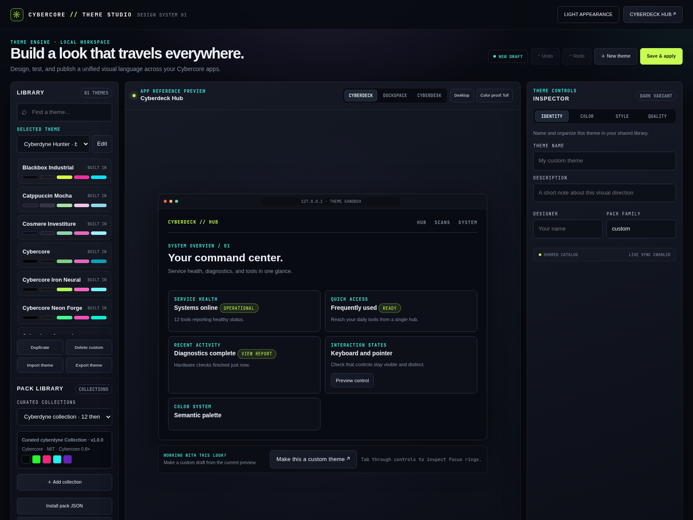
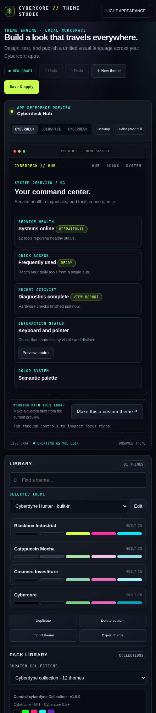

node-07Darkbox stack
12 services · 3 alerts suppressed · uptime 41d
CYBERGRID // THEME ENGINE v0.8 · 300 SOURCE PALETTES · ONE SOURCE OF TRUTH
CYBERCORE // CONTROL PLANE GOVERN
A local-first operating surface for the Cybercore Systems Framework. Govern themes, packs, components, effects, site profiles, validation, telemetry, and publishing from one explainable contract.
📡 SIGNAL / UPDATES
The Control Plane update feed tracks new releases, packs, themes, compatibility notes, security signals, and install paths. It is versioned in this repository and can later be generated from GitHub Releases.
NEW / CYBERCORE THEME STUDIO
Browse the shared library, preview themes against Cyberdeck Hub, Dockspace, and Cyberdesk, then edit colors and design tokens in the browser-based workspace. The same registry drives native tools, Web Kit consumers, and governed packs.


01 / THE CONTRACT
Every theme fills the same eleven slots. Five are surfaces and text, six are neons. Apps never hard-code a colour: they read a slot. Click a slot to copy its hex.
02 / THEME MATRIX
All 312 Cybercore themes across the full registry, each previewed in its own colours. Click a card to repaint the page. Your choice follows you to every Cybercore site.
03 / MASHUP LAB
A mashup takes the surfaces and text from one theme and the neons from another. Try cyberdyne chrome under synthwave light, or build your own and share the link.
04 / PIPELINE
schema/cybergrid.json is the only place a colour or a path is written down. Four runtimes read it, and every downstream tool reads one of those.
05 / DESIGN TOKENS
css/cybertokens.css holds everything that isn't a colour: type scale, spacing, radii and motion, mirrored in schema/tokens.json. Hover the motion lanes to run them.
TYPE SCALE 1.20 · MINOR THIRD
--fs-7Display--fs-6Heading one--fs-5Heading two--fs-4Heading three--fs-3Lead paragraph--fs-2Body copy, 16px--fs-1LABELS AND CHROMESPACING 0.25REM STEP
--space-14--space-28--space-312--space-416--space-524--space-632--space-748--space-864RADII
sharpsmmdlgpillMOTION HOVER TO RUN
--ease-out · slow--ease-in-out · slow--ease-out · midlinear · fast06 / COMPONENTS
The shared parts from css/cybercomponents.css. Nothing below has a hard-coded colour, so switching themes repaints all of it.
node-0712 services · 3 alerts suppressed · uptime 41d
sigilward2 modified · 0 deleted · 1 unreadable under /etc
| MODULE | STATE | TIME |
|---|---|---|
| hardware | PASS | 0.8s |
| network | PASS | 1.2s |
| packages | WARN | 6.4s |
| firewall | FAIL | 0.3s |
| journal | INFO | 2.0s |
❯ curl -s localhost:8787/palette/hot_pink?format=all
{ "hex": "ff147f",
"css": "#ff147f",
"ansi": "\x1b[38;2;…m" }
❯ cargo run --example list_themes
active: cybercore-tech
count: 93
❯ █07 / THE GRID
Each of these reads the CYBERGRID palette. Your theme choice is stored once and carried to every project site.
A full-system audit tool for the CYBERDECK suite, with readable Markdown reports.
CORE · HUBCyberDeck HubA personal cyberdeck build: the central tool hub, tied to this box.
SECURITY · INTEGRITYSigilWardFile-integrity monitor. Baseline a set of paths, then detect drift.
SECURITY · LIVE WATCHArgusReal-time file-integrity watcher. An inotify daemon and TUI that keeps SigilWard's baseline live.
SECURITY · COMPROMISEUndertowRootkit and compromise checks: pacman integrity, SUID, module and persistence drift.
TOOLING · CONTAINERSDockspaceSelf-hosted dashboard for docker-compose stacks, built in Rust on CYBERGRID.
INTEGRATIONS · GITCyberFleetMulti-repo git status from the bar, with a full TUI to fetch, diff and jump in.
INTEGRATIONS · SYSTEMDCyberWatchLive systemd dashboard for your own services: bar widget plus TUI.
INTEGRATIONS · PLUGINSCyberPlugPlugin manager for Omarchy. Now ships the bar widget as part of one plugin package.
08 / INSTALL
Pick your runtime. Every path reads the same file, so the colours match whatever the language.
# Cargo.toml
[dependencies]
cybercore = "0.8"
// main.rs
use cybercore::{palette, paths};
println!("{}online{}", palette::acid_green(), palette::RESET);
let sysops = paths::sysops_root(); // ~/.sysops, expanded// C++
QFile f(":/cybercore/schema/cybergrid.json");
f.open(QIODevice::ReadOnly);
auto doc = QJsonDocument::fromJson(f.readAll());
// QML
property var cybergrid: JSON.parse(cybergrid_json_string)
color: "#" + cybergrid.palette.acid_green/* load order: reset → tokens → theme colours → components */
@import "cybertokens.css";
@import "cybercomponents.css";
.panel {
background: var(--panel);
border: 1px solid var(--line);
color: var(--fg);
padding: var(--space-4);
}# standard library only, Python 3.8+
python3 cybercore_api.py # http://127.0.0.1:8787
curl localhost:8787/palette/cyan?format=rgb
curl localhost:8787/paths?expand=true
curl localhost:8787/schemaCYBERCORE 0.8.1 / CONTROL PLANE
The Control Plane inventories 287 governed resources and 300 source themes plus 12 signature mashups, with 104 effects, 54 components, 114 snippets, 14 assets, and the CyberDark wallpaper pack.
VIEW THE CORE CRATE ↗cargo add cybercore-core cybercore-effects cybercore-componentsPUBLISH CONTRACT ↗Theme CLI: cargo install --locked cybercore --bin cybercore-theme04 / CONTROL PLANE
The Control Plane is the coordination layer between source files, local tools, public sites, and release artifacts. It keeps creative resources inspectable, versioned, attributable, and safe to move between projects.
Workspace manifests describe themes, components, effects, snippets, assets, fonts, and site profiles with IDs, versions, paths, licenses, provenance, tags, dependencies, and platform targets.
.cybercore/workspace.jsonSchema, accessibility, syntax, license, provenance, duplication, compatibility, reduced-motion, preview, and checksum gates turn a creative file into a governed resource.
cybercore-core → validate()Site profiles select a theme, components, effects, assets, motion policy, and fallbacks for each repository without copying the whole catalog into every app.
site.profile → resource IDsDry-run plans make the release diff visible before a Web Kit, pack, or consumer update is published. No generated plan silently deploys or mutates a repository.
cybercore-publish → plan05 / MODDING SURFACE
Cybercore is designed to be extended without forking the engine. Add a resource, describe it with a manifest, validate it locally, preview it, and publish it as a namespaced pack or project overlay.
{
"id": "theme.my-lunar-signal",
"kind": "theme",
"version": "0.1.0",
"status": "review",
"path": "themes/my-lunar-signal.json",
"license": "MIT",
"provenance": {
"source": "github:you/my-pack",
"author": "your-handle",
"license": "MIT",
"reviewed": false
}
}06 / CRATES + PACKS
Use only the layer you need, or assemble the full Control Plane. Rust crates provide contracts and embedded assets; governed packs provide portable resources; the Web Kit serves browser consumers without a build dependency.
cargo add cybercore-core
cybercore-effectsGoverned effects with fallbacks and reduced-motion variants.cargo add cybercore-effects
cybercore-componentsTheme-driven component CSS and interaction contracts.cargo add cybercore-components
cybercore-publishDry-run release plans for packs and Web Kit consumers.cargo add cybercore-publish
Pack selections stay project-local and reproducible. The installer writes manifests under .cybercore/packs/ and exact versions to .cybercore/packs.lock.json.
# Install the companion CLI from the registry repo
cargo install --git https://github.com/cybercoretech/cybercore-packs --package cybercore-pack
cybercore-control pack search cyberdark
cybercore-control pack install cybercore.themes@1.0.0
cybercore-control pack list
cybercore-control pack verify07 / PACK NETWORK
The next step is a first-class pack network: discoverable, namespaced, signed, reviewable, and composable across projects without turning the Control Plane into a monolith.
A dedicated `cybercore-packs` repository or organization registry with searchable manifests, release channels, previews, and compatibility ranges.
Let creators publish `author.pack.resource` IDs, layer project overrides, and resolve collisions without mutating built-ins.
Keep licenses, source URLs, checksums, signatures, review state, and dependency edges visible from discovery to install.
Define reproducible profiles for a site, desktop, Web Kit, or Theme Studio workspace and lock them to known pack versions.